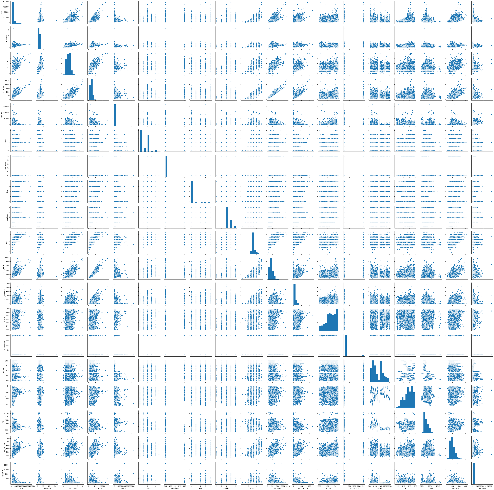

In [13]: sns.pairplot(dataset)
Out[13]: <seaborn.axisgrid.PairGrid at 0x1d4d16e1388>

In [14]: X = dataset.iloc[:,1:].values
...: y = dataset.iloc[:,0].values
In [15]: X.head(5)
Traceback (most recent call last):
File "<ipython-input-15-41fb7caa4f46>", line 1, in <module>
X.head(5)
AttributeError: 'numpy.ndarray' object has no attribute 'head'
In [16]:
In [16]: X
Out[16]:
array([[ 3.00000e+00, 1.00000e+00, 1.18000e+03, ..., -1.22257e+02,
1.34000e+03, 5.65000e+03],
[ 3.00000e+00, 2.25000e+00, 2.57000e+03, ..., -1.22319e+02,
1.69000e+03, 7.63900e+03],
[ 2.00000e+00, 1.00000e+00, 7.70000e+02, ..., -1.22233e+02,
2.72000e+03, 8.06200e+03],
...,
[ 2.00000e+00, 7.50000e-01, 1.02000e+03, ..., -1.22299e+02,
1.02000e+03, 2.00700e+03],
[ 3.00000e+00, 2.50000e+00, 1.60000e+03, ..., -1.22069e+02,
1.41000e+03, 1.28700e+03],
[ 2.00000e+00, 7.50000e-01, 1.02000e+03, ..., -1.22299e+02,
1.02000e+03, 1.35700e+03]])
In [17]: y
Out[17]: array([221900., 538000., 180000., ..., 402101., 400000., 325000.])
In [18]: from sklearn.cross_validation import train_test_split
...: X_train, X_test, y_train, y_test = train_test_split(X, y, test_size = 1/3, random_state = 0)
Traceback (most recent call last):
File "<ipython-input-18-5152289e7eb8>", line 1, in <module>
from sklearn.cross_validation import train_test_split
ModuleNotFoundError: No module named 'sklearn.cross_validation'
In [19]:
In [19]: from sklear.model_selection import train_test_split
Traceback (most recent call last):
File "<ipython-input-19-ad47d5c85e14>", line 1, in <module>
from sklear.model_selection import train_test_split
ModuleNotFoundError: No module named 'sklear'
In [20]:
In [20]: from sklearn.model_selection import train_test_split
In [21]: from sklearn.cross_validation import train_test_split
...: X_train, X_test, y_train, y_test = train_test_split(X, y, test_size = 1/3, random_state = 0)
Traceback (most recent call last):
File "<ipython-input-21-5152289e7eb8>", line 1, in <module>
from sklearn.cross_validation import train_test_split
ModuleNotFoundError: No module named 'sklearn.cross_validation'
In [22]:
In [22]: from sklearn.model_selection import train_test_split
...: X_train, X_test, y_train, y_test = train_test_split(X, y, test_size = 1/3, random_state = 0)
In [23]: X_train
Out[23]:
array([[ 3.00000e+00, 1.50000e+00, 1.26000e+03, ..., -1.22123e+02,
1.80000e+03, 1.03500e+04],
[ 2.00000e+00, 1.00000e+00, 1.32000e+03, ..., -1.22380e+02,
1.36000e+03, 2.87300e+03],
[ 3.00000e+00, 1.00000e+00, 9.20000e+02, ..., -1.22269e+02,
1.17000e+03, 9.60000e+03],
...,
[ 3.00000e+00, 2.25000e+00, 2.36000e+03, ..., -1.22158e+02,
2.72000e+03, 1.43880e+04],
[ 4.00000e+00, 2.00000e+00, 2.37000e+03, ..., -1.22279e+02,
2.11000e+03, 1.93340e+04],
[ 4.00000e+00, 2.25000e+00, 2.38000e+03, ..., -1.22120e+02,
2.23000e+03, 8.92500e+03]])
In [24]: X_test
Out[24]:
array([[ 2.00000e+00, 1.50000e+00, 1.43000e+03, ..., -1.22290e+02,
1.43000e+03, 1.65000e+03],
[ 4.00000e+00, 3.25000e+00, 4.67000e+03, ..., -1.22164e+02,
4.23000e+03, 4.10750e+04],
[ 2.00000e+00, 7.50000e-01, 1.44000e+03, ..., -1.22364e+02,
1.44000e+03, 4.30000e+03],
...,
[ 2.00000e+00, 2.00000e+00, 1.87000e+03, ..., -1.22015e+02,
2.17000e+03, 5.58000e+03],
[ 2.00000e+00, 1.50000e+00, 1.16000e+03, ..., -1.22315e+02,
1.16000e+03, 1.00800e+03],
[ 2.00000e+00, 1.00000e+00, 1.04000e+03, ..., -1.22378e+02,
1.93000e+03, 5.15000e+03]])
In [25]: y_train
Out[25]: array([465750., 575000., 212500., ..., 431000., 411000., 699900.])
In [26]: y_test
Out[26]: array([ 297000., 1578000., 562100., ..., 592500., 284900., 380000.])
In [27]: from sklearn.linear_model import LinearRegression
...: regressor = LinearRegression()
...: regressor.fit(X_train, y_train)
...:
...: # Predicting the Test set results
...: y_pred = regressor.predict(X_test)
In [28]: y_pred
Out[28]:
array([ 386540.9984784 , 1516969.01534087, 538662.72575261, ...,
526000.75505745, 313924.63663325, 400525.67314566])
In [29]: y_test
Out[29]: array([ 297000., 1578000., 562100., ..., 592500., 284900., 380000.])
In [30]: import statsmodels.formula.api as sm
In [31]: X_opt = X[:, [0, 1, 2, 3, 4, 5,6,7,8,9,10,11,12,13,14,15,16,17]]
...: ols = sm.OLS(endog = y,exog = X_opt).fit()
...: ols.summary()
Traceback (most recent call last):
File "<ipython-input-31-3792a58ef518>", line 2, in <module>
ols = sm.OLS(endog = y,exog = X_opt).fit()
AttributeError: module 'statsmodels.formula.api' has no attribute 'OLS'
In [32]:
In [32]: import statsmodels.api as sm
Out[33]:
<class 'statsmodels.iolib.summary.Summary'>
"""
OLS Regression Results
=======================================================================================
Dep. Variable: y R-squared (uncentered): 0.905
Model: OLS Adj. R-squared (uncentered): 0.905
Method: Least Squares F-statistic: 1.211e+04
Date: Sun, 02 Feb 2020 Prob (F-statistic): 0.00
Time: 08:25:08 Log-Likelihood: -2.9461e+05
No. Observations: 21613 AIC: 5.892e+05
Df Residuals: 21596 BIC: 5.894e+05
Df Model: 17
Covariance Type: nonrobust
==============================================================================
coef std err t P>|t| [0.025 0.975]
------------------------------------------------------------------------------
x1 -3.551e+04 1888.716 -18.802 0.000 -3.92e+04 -3.18e+04
x2 4.105e+04 3253.759 12.618 0.000 3.47e+04 4.74e+04
x3 110.2642 2.268 48.607 0.000 105.818 114.711
x4 0.1334 0.048 2.786 0.005 0.040 0.227
x5 5261.5471 3541.347 1.486 0.137 -1679.755 1.22e+04
x6 5.833e+05 1.74e+04 33.598 0.000 5.49e+05 6.17e+05
x7 5.236e+04 2128.298 24.600 0.000 4.82e+04 5.65e+04
x8 2.721e+04 2323.818 11.709 0.000 2.27e+04 3.18e+04
x9 9.548e+04 2145.492 44.503 0.000 9.13e+04 9.97e+04
x10 71.3928 2.238 31.902 0.000 67.006 75.779
x11 38.8714 2.624 14.813 0.000 33.728 44.015
x12 -2561.7953 68.006 -37.670 0.000 -2695.092 -2428.498
x13 20.4187 3.646 5.600 0.000 13.272 27.566
x14 -519.0756 17.826 -29.119 0.000 -554.016 -484.136
x15 6.022e+05 1.07e+04 56.106 0.000 5.81e+05 6.23e+05
x16 -2.179e+05 1.31e+04 -16.683 0.000 -2.44e+05 -1.92e+05
x17 23.0994 3.392 6.811 0.000 16.452 29.747
x18 -0.3761 0.073 -5.137 0.000 -0.520 -0.233
==============================================================================
Omnibus: 18403.146 Durbin-Watson: 1.991
Prob(Omnibus): 0.000 Jarque-Bera (JB): 1873534.498
Skew: 3.572 Prob(JB): 0.00
Kurtosis: 48.049 Cond. No. 4.67e+17
==============================================================================
Warnings:
[1] Standard Errors assume that the covariance matrix of the errors is correctly specified.
[2] The smallest eigenvalue is 1e-21. This might indicate that there are
strong multicollinearity problems or that the design matrix is singular.
"""
In [33]: X_opt = X[:, [0, 1, 2, 3, 4, 5,6,7,8,9,10,11,12,13,14,15,16,17]]
...: ols = sm.OLS(endog = y,exog = X_opt).fit()
...: ols.summary()
In [34]: X_opt = X[:, [0, 1, 2, 3, 4,6,7,8,9,10,11,12,13,14,15,16,17]]
...: ols = sm.OLS(endog = y,exog = X_opt).fit()
...: ols.summary()
Out[34]:
<class 'statsmodels.iolib.summary.Summary'>
"""
OLS Regression Results
=======================================================================================
Dep. Variable: y R-squared (uncentered): 0.900
Model: OLS Adj. R-squared (uncentered): 0.900
Method: Least Squares F-statistic: 1.217e+04
Date: Sun, 02 Feb 2020 Prob (F-statistic): 0.00
Time: 08:26:33 Log-Likelihood: -2.9516e+05
No. Observations: 21613 AIC: 5.903e+05
Df Residuals: 21597 BIC: 5.905e+05
Df Model: 16
Covariance Type: nonrobust
==============================================================================
coef std err t P>|t| [0.025 0.975]
------------------------------------------------------------------------------
x1 -3.833e+04 1935.490 -19.804 0.000 -4.21e+04 -3.45e+04
x2 4.051e+04 3337.593 12.138 0.000 3.4e+04 4.71e+04
x3 112.2505 2.326 48.255 0.000 107.691 116.810
x4 0.1063 0.049 2.165 0.030 0.010 0.203
x5 5493.8277 3632.629 1.512 0.130 -1626.393 1.26e+04
x6 7.924e+04 2022.997 39.169 0.000 7.53e+04 8.32e+04
x7 2.813e+04 2383.557 11.801 0.000 2.35e+04 3.28e+04
x8 9.367e+04 2200.107 42.577 0.000 8.94e+04 9.8e+04
x9 75.1352 2.293 32.771 0.000 70.641 79.629
x10 37.1153 2.691 13.791 0.000 31.840 42.390
x11 -2524.4770 69.750 -36.193 0.000 -2661.192 -2387.762
x12 27.3206 3.734 7.316 0.000 20.001 34.640
x13 -528.8621 18.283 -28.927 0.000 -564.698 -493.026
x14 5.991e+05 1.1e+04 54.420 0.000 5.78e+05 6.21e+05
x15 -2.265e+05 1.34e+04 -16.906 0.000 -2.53e+05 -2e+05
x16 19.9451 3.478 5.735 0.000 13.129 26.762
x17 -0.3469 0.075 -4.620 0.000 -0.494 -0.200
==============================================================================
Omnibus: 19193.801 Durbin-Watson: 1.994
Prob(Omnibus): 0.000 Jarque-Bera (JB): 2019493.632
Skew: 3.827 Prob(JB): 0.00
Kurtosis: 49.733 Cond. No. 4.62e+17
==============================================================================
Warnings:
[1] Standard Errors assume that the covariance matrix of the errors is correctly specified.
[2] The smallest eigenvalue is 1.02e-21. This might indicate that there are
strong multicollinearity problems or that the design matrix is singular.
"""
In [35]: X_opt = X[:, [0, 1, 2, 3,5,6,7,8,9,10,11,12,13,14,15,16,17]]
...: ols = sm.OLS(endog = y,exog = X_opt).fit()
...: ols.summary()
Out[35]:
<class 'statsmodels.iolib.summary.Summary'>
"""
OLS Regression Results
=======================================================================================
Dep. Variable: y R-squared (uncentered): 0.905
Model: OLS Adj. R-squared (uncentered): 0.905
Method: Least Squares F-statistic: 1.287e+04
Date: Sun, 02 Feb 2020 Prob (F-statistic): 0.00
Time: 08:27:09 Log-Likelihood: -2.9461e+05
No. Observations: 21613 AIC: 5.892e+05
Df Residuals: 21597 BIC: 5.894e+05
Df Model: 16
Covariance Type: nonrobust
==============================================================================
coef std err t P>|t| [0.025 0.975]
------------------------------------------------------------------------------
x1 -3.562e+04 1887.390 -18.872 0.000 -3.93e+04 -3.19e+04
x2 4.234e+04 3136.467 13.500 0.000 3.62e+04 4.85e+04
x3 109.9055 2.256 48.724 0.000 105.484 114.327
x4 0.1312 0.048 2.742 0.006 0.037 0.225
x5 5.833e+05 1.74e+04 33.600 0.000 5.49e+05 6.17e+05
x6 5.249e+04 2126.373 24.686 0.000 4.83e+04 5.67e+04
x7 2.691e+04 2315.359 11.624 0.000 2.24e+04 3.15e+04
x8 9.581e+04 2133.801 44.903 0.000 9.16e+04 1e+05
x9 72.5890 2.088 34.763 0.000 68.496 76.682
x10 37.3165 2.407 15.506 0.000 32.599 42.033
x11 -2544.6464 67.021 -37.968 0.000 -2676.013 -2413.280
x12 20.6412 3.643 5.666 0.000 13.500 27.782
x13 -521.7152 17.738 -29.413 0.000 -556.482 -486.948
x14 6.036e+05 1.07e+04 56.456 0.000 5.83e+05 6.25e+05
x15 -2.192e+05 1.3e+04 -16.824 0.000 -2.45e+05 -1.94e+05
x16 22.3571 3.355 6.664 0.000 15.782 28.932
x17 -0.3807 0.073 -5.204 0.000 -0.524 -0.237
==============================================================================
Omnibus: 18359.519 Durbin-Watson: 1.991
Prob(Omnibus): 0.000 Jarque-Bera (JB): 1857062.968
Skew: 3.560 Prob(JB): 0.00
Kurtosis: 47.850 Cond. No. 4.62e+17
==============================================================================
Warnings:
[1] Standard Errors assume that the covariance matrix of the errors is correctly specified.
[2] The smallest eigenvalue is 1.03e-21. This might indicate that there are
strong multicollinearity problems or that the design matrix is singular.
"""
In [36]: def backwardElimination(x, SL):
...: numVars = len(x[0])
...: temp = np.zeros((21613,19)).astype(int)
...: for i in range(0, numVars):
...: regressor_OLS = sm.OLS(y, x).fit()
...: maxVar = max(regressor_OLS.pvalues).astype(float)
...: adjR_before = regressor_OLS.rsquared_adj.astype(float)
...: if maxVar > SL:
...: for j in range(0, numVars - i):
...: if (regressor_OLS.pvalues[j].astype(float) == maxVar):
...: temp[:,j] = x[:, j]
...: x = np.delete(x, j, 1)
...: tmp_regressor = sm.OLS(y, x).fit()
...: adjR_after = tmp_regressor.rsquared_adj.astype(float)
...: if (adjR_before >= adjR_after):
...: x_rollback = np.hstack((x, temp[:,[0,j]]))
...: x_rollback = np.delete(x_rollback, j, 1)
...: print (regressor_OLS.summary())
...: return x_rollback
...: else:
...: continue
...: regressor_OLS.summary()
...: return x
In [37]: SL = 0.05
...: X_opt = X[:, [0, 1, 2, 3, 4, 5,6,7,8,9,10,11,12,13,14,15,16,17]]
...: X_Modeled = backwardElimination(X_opt, SL)
OLS Regression Results
=======================================================================================
Dep. Variable: y R-squared (uncentered): 0.905
Model: OLS Adj. R-squared (uncentered): 0.905
Method: Least Squares F-statistic: 1.211e+04
Date: Sun, 02 Feb 2020 Prob (F-statistic): 0.00
Time: 08:29:35 Log-Likelihood: -2.9461e+05
No. Observations: 21613 AIC: 5.892e+05
Df Residuals: 21596 BIC: 5.894e+05
Df Model: 17
Covariance Type: nonrobust
==============================================================================
coef std err t P>|t| [0.025 0.975]
------------------------------------------------------------------------------
x1 -3.551e+04 1888.716 -18.802 0.000 -3.92e+04 -3.18e+04
x2 4.105e+04 3253.759 12.618 0.000 3.47e+04 4.74e+04
x3 110.2642 2.268 48.607 0.000 105.818 114.711
x4 0.1334 0.048 2.786 0.005 0.040 0.227
x5 5261.5471 3541.347 1.486 0.137 -1679.755 1.22e+04
x6 5.833e+05 1.74e+04 33.598 0.000 5.49e+05 6.17e+05
x7 5.236e+04 2128.298 24.600 0.000 4.82e+04 5.65e+04
x8 2.721e+04 2323.818 11.709 0.000 2.27e+04 3.18e+04
x9 9.548e+04 2145.492 44.503 0.000 9.13e+04 9.97e+04
x10 71.3928 2.238 31.902 0.000 67.006 75.779
x11 38.8714 2.624 14.813 0.000 33.728 44.015
x12 -2561.7953 68.006 -37.670 0.000 -2695.092 -2428.498
x13 20.4187 3.646 5.600 0.000 13.272 27.566
x14 -519.0756 17.826 -29.119 0.000 -554.016 -484.136
x15 6.022e+05 1.07e+04 56.106 0.000 5.81e+05 6.23e+05
x16 -2.179e+05 1.31e+04 -16.683 0.000 -2.44e+05 -1.92e+05
x17 23.0994 3.392 6.811 0.000 16.452 29.747
x18 -0.3761 0.073 -5.137 0.000 -0.520 -0.233
==============================================================================
Omnibus: 18403.146 Durbin-Watson: 1.991
Prob(Omnibus): 0.000 Jarque-Bera (JB): 1873534.498
Skew: 3.572 Prob(JB): 0.00
Kurtosis: 48.049 Cond. No. 4.67e+17
==============================================================================
Warnings:
[1] Standard Errors assume that the covariance matrix of the errors is correctly specified.
[2] The smallest eigenvalue is 1e-21. This might indicate that there are
strong multicollinearity problems or that the design matrix is singular.
In [38]: X_Modeled
Out[38]:
array([[3.000e+00, 1.000e+00, 1.180e+03, ..., 5.650e+03, 0.000e+00,
1.000e+00],
[3.000e+00, 2.250e+00, 2.570e+03, ..., 7.639e+03, 0.000e+00,
2.000e+00],
[2.000e+00, 1.000e+00, 7.700e+02, ..., 8.062e+03, 0.000e+00,
1.000e+00],
...,
[2.000e+00, 7.500e-01, 1.020e+03, ..., 2.007e+03, 0.000e+00,
2.000e+00],
[3.000e+00, 2.500e+00, 1.600e+03, ..., 1.287e+03, 0.000e+00,
2.000e+00],
[2.000e+00, 7.500e-01, 1.020e+03, ..., 1.357e+03, 0.000e+00,
2.000e+00]])
In [39]: plt.scatter(X,y,color= 'green')
...: plt.plot(X,regressor.predict(X),color='blue')
Traceback (most recent call last):
File "<ipython-input-39-242beb032e83>", line 1, in <module>
plt.scatter(X,y,color= 'green')
File "C:\Users\user\Anaconda3\lib\site-packages\matplotlib\pyplot.py", line 2847, in scatter
None else {}), **kwargs)
File "C:\Users\user\Anaconda3\lib\site-packages\matplotlib\__init__.py", line 1601, in inner
return func(ax, *map(sanitize_sequence, args), **kwargs)
File "C:\Users\user\Anaconda3\lib\site-packages\matplotlib\axes\_axes.py", line 4444, in scatter
raise ValueError("x and y must be the same size")
ValueError: x and y must be the same size
In [40]:
In [40]: plt.scatter(X,y,color= 'green')
...: plt.plot(X_train,regressor.predict(X_train),color='blue')
Traceback (most recent call last):
File "<ipython-input-40-e65c61af0919>", line 1, in <module>
plt.scatter(X,y,color= 'green')
File "C:\Users\user\Anaconda3\lib\site-packages\matplotlib\pyplot.py", line 2847, in scatter
None else {}), **kwargs)
File "C:\Users\user\Anaconda3\lib\site-packages\matplotlib\__init__.py", line 1601, in inner
return func(ax, *map(sanitize_sequence, args), **kwargs)
File "C:\Users\user\Anaconda3\lib\site-packages\matplotlib\axes\_axes.py", line 4444, in scatter
raise ValueError("x and y must be the same size")
ValueError: x and y must be the same size
In [41]:
In [41]: plt.scatter(X_train,y_train,color= 'green')
...: plt.plot(X_train,regressor.predict(X_train),color='blue')
Traceback (most recent call last):
File "<ipython-input-41-867e72849f5f>", line 1, in <module>
plt.scatter(X_train,y_train,color= 'green')
File "C:\Users\user\Anaconda3\lib\site-packages\matplotlib\pyplot.py", line 2847, in scatter
None else {}), **kwargs)
File "C:\Users\user\Anaconda3\lib\site-packages\matplotlib\__init__.py", line 1601, in inner
return func(ax, *map(sanitize_sequence, args), **kwargs)
File "C:\Users\user\Anaconda3\lib\site-packages\matplotlib\axes\_axes.py", line 4444, in scatter
raise ValueError("x and y must be the same size")
ValueError: x and y must be the same size

In [42]:
In [42]: from sklearn.model_selection import train_test_split
...: X_train, X_test, y_train, y_test = train_test_split(X, y, test_size = 1/3, random_state = 0)
...:
...: from sklearn.linear_model import LinearRegression
...: regressor = LinearRegression()
...: regressor.fit(X_train, y_train)
...:
...: plt.scatter(X_train,y_train,color= 'green')
...: plt.plot(X_train,regressor.predict(X_train),color='blue')
Traceback (most recent call last):
File "<ipython-input-42-0bc9f912164b>", line 8, in <module>
plt.scatter(X_train,y_train,color= 'green')
File "C:\Users\user\Anaconda3\lib\site-packages\matplotlib\pyplot.py", line 2847, in scatter
None else {}), **kwargs)
File "C:\Users\user\Anaconda3\lib\site-packages\matplotlib\__init__.py", line 1601, in inner
return func(ax, *map(sanitize_sequence, args), **kwargs)
File "C:\Users\user\Anaconda3\lib\site-packages\matplotlib\axes\_axes.py", line 4444, in scatter
raise ValueError("x and y must be the same size")
ValueError: x and y must be the same size

In [43]:
In [43]: from sklearn.model_selection import train_test_split
...: X_train, X_test, y_train, y_test = train_test_split(X, y, test_size = 1/3, random_state = 0)
...:
...: from sklearn.linear_model import LinearRegression
...: regressor = LinearRegression()
...: regressor.fit(X_train, y_train)
...:
...: #plt.scatter(X_train,y_train,color= 'green')
...: plt.plot(X_train,regressor.predict(X_train),color='blue')
...: # Predicting the Test set results
...: y_pred = regressor.predict(X_test)
In [44]: